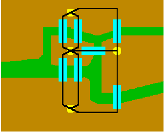

Königsburg was founded by the Teutonic Knights in 1255 at the meeting
point of two branches of the river Pregel, and went on to be the capital of
Prussia. It was flattened by bombing raids during the Second World War, and
was annexed by the Soviet Union in 1945, at which stage it was renamed
Kaliningrad. Today, it is in the small Russian parcel of land on the Baltic
Sea that is wedged between Lithuania and Northeastern Poland.
Many famous figures in history were born in Königsburg, including the
philosopher Immanuel Kant, the mathematicians Christian Goldbach and David
Hilbert, and the physicist Gustav Kirchhoff. To mathematicians, though,
Königsburg is best known for a puzzle associated with its seven bridges
(shown in blue on the map): its citizens pondered for a long time whether it
was possible to walk about the city in such a way that you cross all seven
bridges over the river Pregel exactly once. |
 |